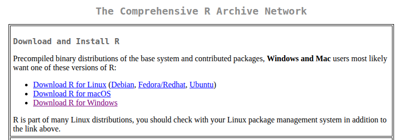
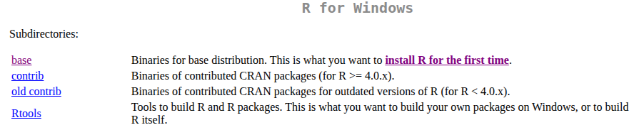
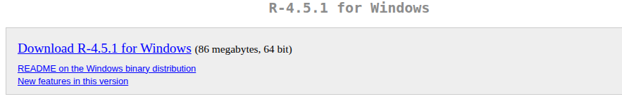
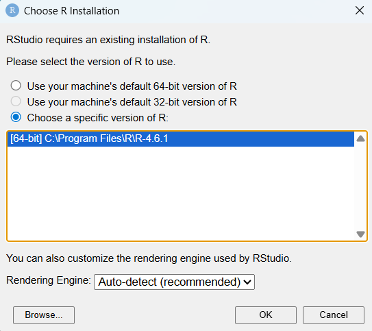
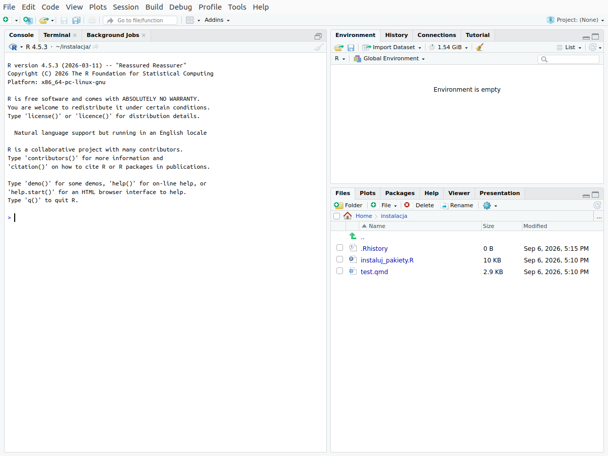
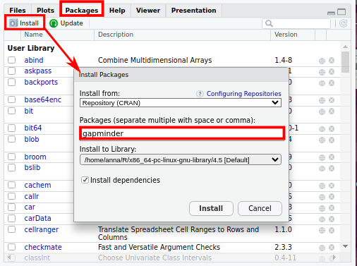

# Instalacja jednego pakietu
install.packages("tidyverse")1 Instalacja R i RStudio
Rozdział opisuje przygotowanie komputera z systemem Windows do ćwiczeń. Instalację wykonuje się jeden raz, przed pierwszymi ćwiczeniami.
1.1 Zanim zaczniesz
Do pracy potrzebne są cztery elementy:
| Kolejność | Element | Rola | Źródło |
|---|---|---|---|
| 1 | R | język programowania i środowisko, które wykonuje obliczenia | https://cran.r-project.org |
| 2 | RStudio Desktop | program, w którym otwiera się pliki z kodem, uruchamia kod i ogląda wyniki | https://docs.posit.co/ide/user/#rstudio-ide-oss-downloads |
| 3 | Quarto | program, który tworzy dokument (np. HTML) z pliku .qmd zawierającego tekst i kod R |
wbudowany w RStudio |
| 4 | pakiety R | dodatkowe zestawy funkcji, np. do przetwarzania danych i tworzenia wykresów | instalowane w RStudio z serwera CRAN |
Wymagania:
- komputer z systemem Windows 10 lub nowszym;
- połączenie z internetem — pakiety pobierane są z serwera CRAN;
- prawo do instalowania programów. Na komputerze służbowym instalację R i RStudio może wykonać administrator; pakiety R instalują się bez uprawnień administratora.
R i RStudio instalują się w kilka minut, pobranie pakietów wraz z pakietami, od których zależą, trwa kilkanaście minut.
Kolejność instalacji ma znaczenie: RStudio przy pierwszym uruchomieniu wyszukuje R na dysku, dlatego R instaluje się jako pierwszy.
1.2 Instalacja R
- Otwórz stronę CRAN (Comprehensive R Archive Network): https://cran.r-project.org.
- W sekcji Download and Install R wybierz Download R for Windows (Rycina 1.1).
- Wybierz base (Rycina 1.2).
- Wybierz Download R-x.x.x for Windows, gdzie x.x.x to numer aktualnej wersji R (Rycina 1.3). Numer wersji zmienia się kilka razy w roku; na rycinie jest to wersja 4.5.1.
- Uruchom pobrany plik
.exe. Wybierz język instalacji, a w kolejnych oknach instalatora zatwierdź ustawienia domyślne przyciskiem Dalej (Next).



1.3 Instalacja RStudio
- Otwórz stronę z plikami instalacyjnymi RStudio: https://docs.posit.co/ide/user/#rstudio-ide-oss-downloads.
- Pobierz RStudio Desktop w wersji Open Source (bezpłatnej) — plik z rozszerzeniem
.exedla systemu Windows. - Uruchom pobrany plik i w kolejnych oknach instalatora zatwierdź ustawienia domyślne.
- Uruchom RStudio. Przy pierwszym uruchomieniu może pojawić się okno Choose R Installation z pytaniem, której wersji R ma używać RStudio (Rycina 1.4). Zaznacz trzecią opcję, Choose a specific version of R, wybierz z listy wersję zainstalowaną w poprzednim kroku i kliknij OK.
RStudio Desktop, nie RStudio Server
Na stronie z plikami do pobrania znajdują się dwa programy o podobnej nazwie. RStudio Desktop instaluje się na własnym komputerze — ta wersja jest potrzebna do ćwiczeń. RStudio Server jest przeznaczone do instalacji na serwerze i obsługi przez przeglądarkę. Wersję Open Source należy wybrać zamiast wersji Pro.

Po poprawnej instalacji RStudio uruchamia się z oknem przedstawionym na Rycina 1.5. Części okna i zasady pracy w programie opisuje Rozdział 2.

Wskazówka
Od tej pory uruchamia się wyłącznie RStudio. Programu R nie uruchamia się bezpośrednio — RStudio korzysta z niego w tle.
1.4 Quarto
Quarto tworzy gotowy dokument z pliku .qmd, który zawiera tekst i bloki kodu R. Aktualne wersje RStudio zawierają Quarto, dlatego zwykle nie instaluje się go osobno. Jeżeli przy tworzeniu dokumentu z pliku .qmd (przycisk Render) pojawi się komunikat o braku programu Quarto, należy pobrać i zainstalować Quarto ze strony https://quarto.org, a następnie ponownie uruchomić RStudio.
1.5 Instalacja pakietów
Pakiet to zestaw funkcji rozszerzających podstawowe możliwości R, np. do przetwarzania danych, tworzenia wykresów albo pracy z danymi przestrzennymi. Pakiet instaluje się raz; zostaje na dysku i jest dostępny we wszystkich kolejnych sesjach pracy. W skrypcie wykorzystywanych jest 15 pakietów, w tym jeden opcjonalny (waffle):
| Pakiet | Zastosowanie w skrypcie |
|---|---|
tidyverse |
przetwarzanie danych i wykresy; pakiet zbiorczy, zawiera m.in. dplyr, ggplot2, tidyr |
knitr, rmarkdown |
wykonywanie kodu R w dokumentach .qmd; tabele |
sf |
dane przestrzenne i mapy |
rnaturalearth, rnaturalearthdata |
granice państw świata |
geodata |
pobieranie granic jednostek administracyjnych, np. powiatów |
climate |
pobieranie danych meteorologicznych IMGW-PIB |
ggrepel |
etykiety na wykresach, które na siebie nie nachodzą |
scatterpie |
kartodiagram strukturalny: wykresy kołowe na mapie |
GGally |
macierz wykresów rozrzutu |
corrplot, Hmisc |
korelogram; współczynniki korelacji z wartościami p |
car, PerformanceAnalytics, psych |
macierz wykresów rozrzutu |
patchwork |
łączenie kilku wykresów w jedną rycinę |
ggridges |
wykres grzbietowy |
treemapify |
wykres treemap |
waffle |
opcjonalny: wykres typu waffle w załączniku (Sekcja B.6.2); instalowany z serwisu GitHub |
Każdy pakiet korzysta z innych pakietów — są to jego zależności (dependencies). R pobiera je automatycznie, dlatego podczas instalacji w konsoli pojawiają się nazwy pakietów spoza powyższej tabeli; łącznie instalowanych jest ponad sto pakietów. Opis pakietów zawiera Rozdział 6.
Pakiet instaluje się w RStudio na jeden z dwóch sposobów: w zakładce Packages albo poleceniem install.packages() wpisanym w konsoli. Oba sposoby pobierają pakiet z serwera CRAN i dają ten sam wynik.
1.5.1 Instalacja w zakładce Packages
- W prawej dolnej części okna RStudio wybierz zakładkę Packages i kliknij Install (Rycina 1.6).
- W oknie Install Packages pozostaw w polu Install from wartość Repository (CRAN).
- W polu Packages wpisz nazwę pakietu, np.
tidyverse. Podczas wpisywania RStudio podpowiada nazwy pakietów dostępnych w CRAN. - Pozostaw zaznaczoną opcję Install dependencies — RStudio zainstaluje także pakiety, od których zależy instalowany pakiet.
- Kliknij Install. Przebieg instalacji wyświetla się w konsoli.
- Powtórz kroki 1–5 dla kolejnych pakietów z tabeli.

gapminder).
1.5.2 Instalacja poleceniem install.packages()
Polecenie wpisuje się w konsoli i zatwierdza klawiszem Enter. Poleceniem install.packages() można zainstalować jeden pakiet albo kilka pakietów naraz.
Jeden pakiet. Nazwę pakietu podaje się w cudzysłowie:
Wszystkie pakiety naraz. Nazwy pakietów, każdą w cudzysłowie i oddzieloną przecinkiem, łączy się funkcją c() (od ang. combine) w jeden wektor — uporządkowany ciąg wartości tego samego typu, tu: nazw pakietów:
# Instalacja wszystkich pakietów z repozytorium CRAN jednym poleceniem
install.packages(c("tidyverse", "knitr", "rmarkdown", "sf", "rnaturalearth",
"rnaturalearthdata", "geodata", "ggrepel", "scatterpie",
"GGally", "patchwork", "ggridges", "treemapify", "climate",
"corrplot", "Hmisc", "car", "PerformanceAnalytics", "psych"))Polecenie można skopiować do konsoli w całości. R pobiera i instaluje wszystkie wymienione pakiety wraz z ich zależnościami.
Pakiet waffle jest opcjonalny: korzysta z niego tylko jeden wykres w załączniku (Sekcja B.6.2). Pakietu nie ma w repozytorium CRAN, dlatego polecenie install.packages("waffle") zwraca komunikat o jego braku. Pakiet instaluje się z serwisu GitHub za pomocą pakietu remotes:
# Instalacja pakietu waffle z serwisu GitHub
install.packages("remotes")
remotes::install_github("hrbrmstr/waffle")1.5.3 Przebieg instalacji
- W konsoli wyświetlane są kolejne komunikaty: nazwy pobieranych pakietów, w tym zależności, i informacje o rozpakowaniu plików. Część komunikatów ma kolor czerwony, co nie oznacza błędu.
- Dopóki w prawym górnym rogu konsoli widoczny jest czerwony znak stop, instalacja trwa. Pakiet
tidyversewraz z zależnościami instaluje się kilka minut. - Instalacja jest zakończona, gdy w konsoli pojawi się znak zachęty
>. - Gdy użytkownik nie ma prawa zapisu w katalogu instalacji R (np. na komputerze służbowym), R wyświetla pytanie Would you like to use a personal library instead?, a następnie pytanie o utworzenie tego katalogu. Na oba pytania należy odpowiedzieć Yes. Pakiety zostaną zainstalowane w katalogu prywatnym użytkownika.
1.5.4 Sprawdzenie instalacji pakietu
Zainstalowany pakiet wczytuje się poleceniem library() z nazwą pakietu, bez cudzysłowu:
library(tidyverse)Jeżeli pakiet jest zainstalowany, polecenie nie zwraca błędu. Po wczytaniu pakietu tidyverse konsola wyświetla listę wczytanych pakietów i informację o konfliktach nazw funkcji (Conflicts) — są to komunikaty informacyjne, nie błędy. Jeżeli pakietu brakuje, R zwraca błąd there is no package called ....
Instalację można sprawdzić także bez wpisywania polecenia: pakiet zainstalowany znajduje się na liście w zakładce Packages (Sekcja 2.1.1).
Pakiet instaluje się jeden raz. Polecenie library() wykonuje się w każdej sesji pracy — w skrypcie znajduje się ono w każdym pliku .qmd, przed pierwszym użyciem pakietu.
1.6 Rozwiązywanie problemów
| Komunikat lub objaw | Przyczyna i postępowanie |
|---|---|
there is no package called "..." |
pakiet nie jest zainstalowany — zainstaluj go (Sekcja 1.5) |
package "..." is not available for this version of R |
zainstalowana wersja R jest nieaktualna albo nazwa pakietu zawiera błąd — sprawdź pisownię nazwy (wielkość liter ma znaczenie, np. GGally); jeśli jest poprawna, zainstaluj aktualną wersję R (Sekcja 1.2) |
cannot open URL / unable to access index for repository |
brak połączenia z internetem albo blokada sieciowa; na komputerze służbowym administrator może odblokować dostęp do serwera CRAN |
'lib = "C:/Program Files/R/..."' is not writable i pytanie Would you like to use a personal library instead? |
brak prawa zapisu w katalogu instalacji R — odpowiedz Yes na to pytanie i na pytanie o utworzenie katalogu |
| komunikat o braku programu Quarto | zainstaluj Quarto ze strony https://quarto.org i ponownie uruchom RStudio |
| RStudio nie reaguje podczas instalacji | jeśli w rogu konsoli widoczny jest czerwony znak stop, instalacja trwa |
Jeżeli problem się powtarza, do zgłoszenia prowadzącej należy dołączyć treść komunikatu z konsoli oraz wynik polecenia sessionInfo() wpisanego w konsoli — zawiera on wersję R, wersję systemu i listę wczytanych pakietów.